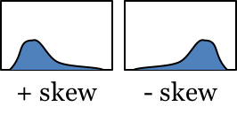
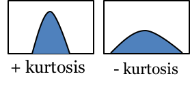

This page where you can do narrative catalysis. Here you can look at all of the graphs describing your data, make observations about them, and interpret those observations.
This page where you can do narrative catalysis. Here you can look at all of the graphs describing your data, make observations about them, and interpret those observations.
Start by choosing a catalysis report to work with. Then look at the patterns (graphs) NarraFirma has generated. Click on a pattern name in the table to see it below the table. You can use the arrow buttons to move systematically through the list of patterns.
As you are looking at a graph, hover the mouse to see the stories, thus:
When you are looking at any graph, click and drag to select stories. The selected stories will appear in the list under the graph.
If you think a pattern is worth noting in your report, fill in an observation under the graph, and give the observation a name. Then enter at least two competing interpretations — that is, two things reasonable people with different viewpoints might say about what the observation means. Give each interpretation a name as well.
When you look back at the table at the top of the page, you will be able to sort it by whether you have marked the graph with an observation. In that way you can first go through your patterns looking for interesting patterns, then go back to the patterns you marked to think about them more deeply.
This is the most complicated page in the entire NarraFirma application. Give yourself some time to learn how to use it effectively. A few tips should help you manage the complex task of reviewing patterns and writing observations and interpretations.
Those are the counts of stories that would be in each "cell" of the table if the two sets of choices were distributed only by chance. You could call them the "expected" counts, as against the counts actually observed. Tables of count results where the expected counts are very different from the observed counts are likely to produce significant test results from the chi-squared test.
You can hover your mouse over any of the circles to see how many stories were expected to be found there and how many were actually found there.
The line is the mean of the distribution for the scale question shown. The smaller box around the line shows one standard deviation to the left and right of the mean. The height of the box shows the relative number of stories in that category.
You can hover your mouse over any of the squares to see how many stories are in that combination (of two choice questions and one scale question), and what the exact values are for the mean, standard deviation, skewness, and kurtosis of the distribution.
The red line is the mean (average) of the distribution. Each of the two green lines marks one standard deviation away (lower and higher) from the mean.
You can hide them. Go to the "Configure catalysis report" page and uncheck the check box under "Would you prefer to see statistical results directly on the Explore patterns page?" Then come back to the Explore patterns page and look at your graphs again; they will not show any statistical results. You can still see the statistical results by choosing "Show statistical results" in the "things you can do" list and clicking 'Do it.'
Note: when you hide statistical results, the HTML elements (divs) that show the statistical results are actually still on the page. They just have their "display" options set to "none". If you wanted temporarily show a statistical-results panel (maybe for a screenshot or something), you could open your browser's development console, inspect the graph whose panel you want to show, find the hidden statistical panel, and turn off its "display: none" option.
If you've made a selection of stories in one part of a graph (say in the upper right corner of a scatter plot), you might want to remember those stories when you look back at your observation again. Under the graph, choose "Save the current selection," then click "Do it." A text representation of what you selected will appear in the "These are the selections you have saved" text box.
When you return to the observation again and want to see the same stories, click inside the text representation of the selection in the "These are the selections you have saved" text box. Then choose "Restore a saved selection" and click "Do it."" The same stories should appear in the list.
You can record and use more than one selection, and you can (carefully) edit the text representations by hand, if you want to.
Linking questions help readers of your catalysis report understand how each observation is connected to its interpretations. They do this by framing a question to which your interpretations are answers.
Without linking questions, you might end up starting each interpretation with the same question. Writing linking questions saves you that bother, and it makes your report more clear.
You can't get the original name and text back, but your interpretations still exist. Find the pattern the observation was connected to and write a new observation name and text. Your interpretations should reappear in a list under the new name and text.
When we first started working on NarraFirma, it never occurred to us that people would want to write more than one observation per pattern. When we found out that some people did want to do that, we decided not to change the one-observation-per-pattern system, for three reasons:
So you can write more than one observation per pattern, but it's a little messy. You can divide an observation into sections and refer to those sections (rather than the whole observation) in your interpretations. Here is how to do it.
When you write the observation (that is, its main text), begin each section with a header that starts and ends with the @ character (for example, @A@ and @B@). Then refer to the headers in your interpretations (in their main texts, not their names).
When you print your catalysis report, NarraFirma will act as if the sections were separate observations. You can also segment observation titles and linking questions.
For example, say you write an observation with two parts, like this:
@A@ There are more stories about cats than about dogs. @B@ The stories people told about cats seem more friendly.
And say you give your observation this name:
@A@ More Cats Than Dogs @B@ Cat Stories More Friendly
And this linking question:
@A@ Why are there more cats than dogs? @B@ Why are the stories about cats friendlier?
Now say your interpretations look like this:
@A@ Because cats are better than dogs. @A@ Because cats live longer than dogs. @B@ Because people who have cats are friendlier people. @B@ Because the interviewer has a cat, so the people they talked to felt more at home.
The clustered-interpretations catalysis report will look like this:
Why are there more cats than dogs? Because cats are better than dogs. More Cats Than Dogs: There are more stories about cats than about dogs. Why are there more cats than dogs? Because cats live longer than dogs. More Cats Than Dogs: There are more stories about cats than about dogs. Why are the stories about cats friendlier? Because people who have cats are friendlier people. Cat Stories More Friendly: The stories people told about cats seem more friendly. Why are the stories about cats friendlier? Because the interviewer has a cat, so the people they talked to felt more at home. Cat Stories More Friendly: The stories people told about cats seem more friendly.
And the clustered-observations report will look like this:
More Cats Than Dogs: There are more stories about cats than about dogs. Why are there more cats than dogs? Because cats are better than dogs. Because cats live longer than dogs. Cat Stories More Friendly: The stories people told about cats seem more friendly. Why are the stories about cats friendlier? Because people who have cats are friendlier people. Because the interviewer has a cat, so the people they talked to felt more at home.
These headers:
There are a few limitations with this segemented-texts approach. When you cluster observations, you will have only one bubble to cluster with (so both segments have to be in the same theme). Also, you cannot set different observation strengths for the different parts of the observation. Still, if you really want to say two things about a graph, this is how to do it.
You're in luck, because this is easy.
When NarraFirma prints your report, it will print the additional patterns you specified just after the pattern associated with the observation. You can include as many additional patterns as you like; just make sure each one is described on its own line of text.
There is a "secret" trick to this function. If the very first additional pattern name (on the first line of the box) reads exactly REPLACE_PATTERN, NarraFirma will hide the graph the observation is linked to. This means that you can substitute other patterns for the pattern that is supposed to be drawn for an observation. Why would you want to do this? Because it gives you another way to write more than one observation per pattern. Instead of segmenting an observation, you can "steal" an observation space from another pattern.
If you need to change your stories but do not need to create a new story collection, you can just go ahead and change your stories. Be sure to go back over your observations to see if you need to revise them.
If you need to start a new story collection, perhaps because you discovered an import mistake, you can still fix the problem. Scroll to the bottom of the "Configure catalysis report" page, and click "Export report elements to CSV." This will write out a CSV file with all of the observations, interpretations, and perspectives you have created in the report. Then create your new story collection, create a new catalyis report, scroll down to the bottom of the "Configure catalysis report" page again, and click "Import report elements from CSV." As long as the question short names match between the two story collections (or both sets of story collections), the report elements will connect up correctly. There is a fuller explanation of this feature in the help page for the Configure catalysis report page.
Yes there is. You can export your data (and your story form) to CSV, tell NarraFirma that you want to consolidate some answers together, and then re-import your data to a new story collection. See the help page on the design story forms page for details on how to do this.
The non-parametric Mann-Whitney U test and Spearman's test are used without testing whether the data is normally distributed, to be conservative.
Skewness is a measure of how far the distribution is skewed away from being symmetrical. Positive skewness means the bulk of the values are on the left (and the right tail is longer). Negative skewness means the bulk of the values are on the right (and the left tail is longer).
Kurtosis is a measure of how peaked or flat a distribution is. Positive kurtosis means the distribution is strongly peaked. Negative kurtosis means the distribution is flattened.
That's because some of the tests (chi-squared, Mann-Whitney U) can only be run on mutually exclusive choices. Any questions where people could choose more than one answer will have no test values when they are combined with other questions.
Here is an excerpt from Working with Stories (from page 272) that can explains why writing competing interpretations is worth doing.
My placement of the generation of multiple interpretations at the center of catalysis is based on my observations of how people react to single interpretations of patterns. When people encounter one interpretation, you can see them taking sides: do I agree or don’t I? Their attention is on the interpretation, not on their own feelings or beliefs or experiences. They put on their armor and prepare to do battle. It’s clear to them that the one interpretation they see is the interpretation held by the author of the report: why else would they write it? And as the interpretations build throughout the report, people build explanations about the whole report: it’s biased, or the author doesn’t know what they are talking about, or the reasoning is flawed. All of this stops sensemaking short and destroys any hope of productive thought or discussion.
In contrast, when you give people two or more competing interpretations of the same pattern, they turn their attention away from attacking or defending the interpretations and toward exploring their own experiences. This is what you want people to do. You want people to dwell on messy ambiguities, and to use them, until they resolve themselves naturally (or don’t). If the author of the report has written two interpretations, the reader can’t tell which is the author’s own, so there is nothing to attack or defend, and there are no larger explanations about bias or ineptitude to build. The report author essentially walks out of the picture and lets the reader think. The reader can put away their armor and get out their maps and spyglasses. They can explore.
Let me give you a more concrete example of how this works. Say I am looking at stories people told about their telephone service. Say I’ve seen a pattern that the younger the participant, the more likely they were to say they felt disappointed by the events in their story. If I give people one interpretation — that younger people are not happy with their telephone service — people start turning their binary switches off and on. Yes that’s right, no that’s wrong. But what happens if I say that younger people might not be happy with their telephone service, or older people might not understand the question, or younger people might be more willing to admit to disappointment (whereas older people might feel more pressure to say everything’s fine), or younger people might be more disappointed about other things and it drifts over, and so on? I’ve marked out a space for exploration and invited people on a journey, instead of setting up a straw man to be knocked down.